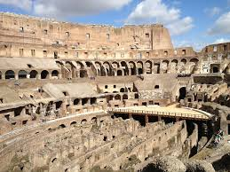
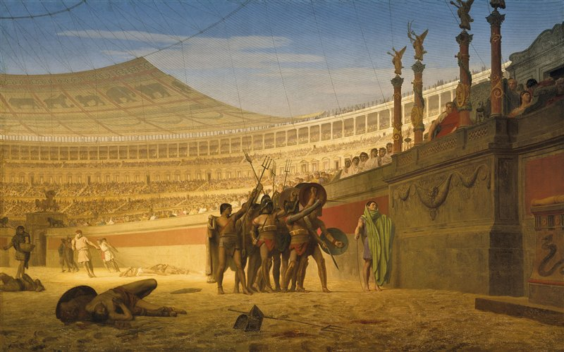
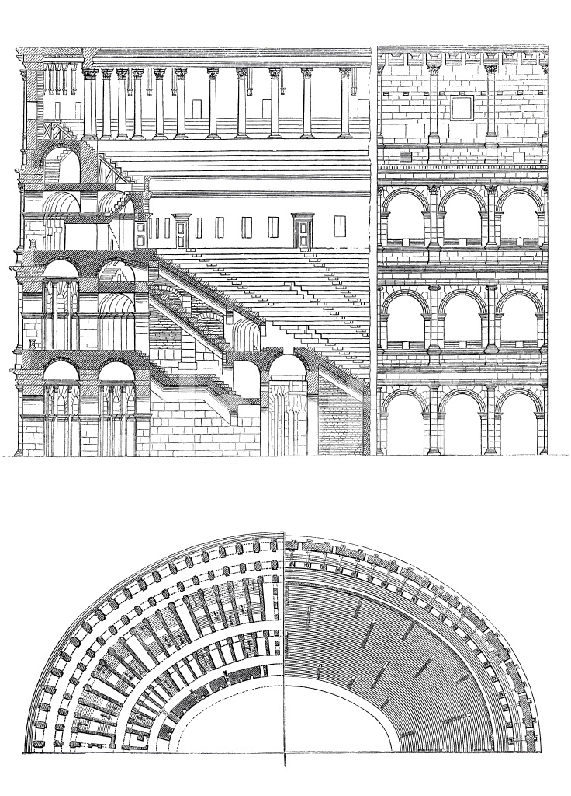
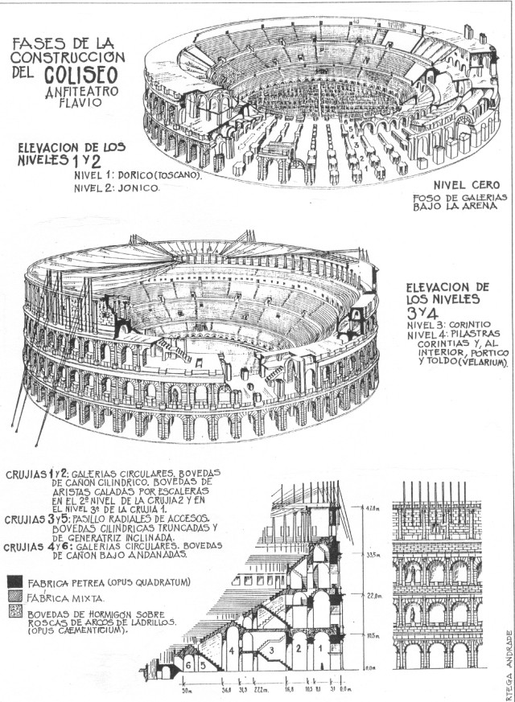

El Coliseo se convirtió en el mayor anfiteatro romano, con una estructura elíptica de 188 metros de longitud, 156 metros de ancho y 57 metros de altura. Realizado en ladrillo y cubierto con travertino se dividía en cinco niveles con una capacidad para más de 50.000 personas.
El Coliseo Romano, también conocido como Anfiteatro Flavio, es uno de los monumentos más emblemáticos y reconocidos del mundo, ubicado en el corazón de Roma, Italia. Fue construido entre los años 70 y 80 d.C. bajo el mandato de los emperadores Vespasiano y Tito, de la dinastía Flavia, y se utilizaba principalmente para espectáculos públicos como combates de gladiadores, simulacros de batallas navales, cacerías de animales y ejecuciones.
La construcción del Coliseo comenzó bajo el mandato del emperador Vespasiano en el año 70 d.C. y fue completada en el año 80 d.C. por su hijo, el emperador Tito. El Coliseo fue un regalo del emperador a los ciudadanos romanos, diseñado para demostrar la grandeza de Roma y brindar un lugar de entretenimiento masivo.
El Coliseo fue inaugurado con grandes festividades que incluyeron juegos y combates de gladiadores que duraron 100 días. Durante estas festividades, se estima que murieron miles de animales y gladiadores, reflejando el brutal entretenimiento de la época.
El Coliseo Romano, también conocido como el Anfiteatro Flavio, es una obra maestra de la arquitectura y la ingeniería romana. Aquí te doy un detalle más profundo sobre su diseño, estructura y elementos clave:
Dimensiones y Estructura Forma y Tamaño: El Coliseo tiene forma elíptica, con un eje largo de 188 metros y uno corto de 156 metros. La altura máxima de su fachada exterior es de aproximadamente 50 metros, lo que equivale a un edificio de 12 a 15 pisos. Capacidad: Se estima que podía albergar entre 50,000 y 80,000 espectadores, distribuidos en diferentes niveles o gradas.
El Coliseo, oficialmente conocido como Anfiteatro Flavio, se construyó durante la dinastía Flavia en un período de transformación y restauración para Roma tras la turbulenta era del emperador Nerón. Tras el gran incendio de Roma en el 64 d.C., Nerón construyó su Domus Aurea, una inmensa villa que ocupaba gran parte del centro de la ciudad, incluyendo el espacio donde posteriormente se levantaría el Coliseo. El emperador Vespasiano, que subió al poder tras la muerte de Nerón y la guerra civil subsiguiente, decidió devolver el centro de Roma al pueblo, y en ese mismo espacio comenzó la construcción del Coliseo en el 70 d.C. Fue un proyecto propagandístico que simbolizaba el retorno a los valores tradicionales y la consolidación del poder imperial.
